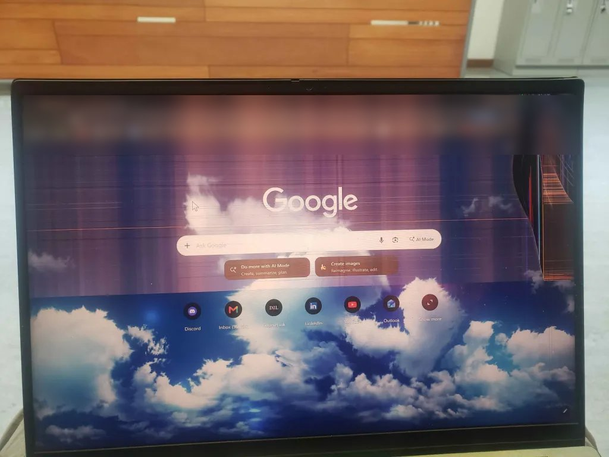
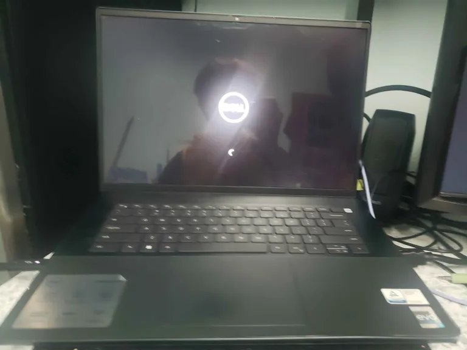

New Eyes
Captain's log, stardate 2026.288.
Eight days ago the strap on my bag gave out. The laptop hit the ground. When I opened it, the screen was a wall of coloured lines, and soon after, nothing at all.

The ship was not lost. Only her eyes. Drive, memory, wireless, battery, keyboard, hinge: I checked each one, and each one answered. The damage was the display panel and nothing else.
The easy fix was a whole new lid. I wanted to replace only the panel.
Finding the part
For this I sent Claude agents ahead as scouts. They pinned down the exact panel: part number, resolution, connector, and searched listings for that panel and not a lookalike. The best offer came in under one hundred and twenty-five dollars, with thirty days to return it if it failed. Then they tracked it, through customs and across two carriers, until it arrived this afternoon.
I made the final call. They did the legwork in an evening, not a week.
The repair
The first video I found replaced the entire display assembly. Not my mission. The one I loosely followed, for a newer model of the same laptop, did the panel alone: https://www.youtube.com/watch?v=mYO4ysgaeuo
Battery off. Bezel pried free, gently at the top, where the webcam lives. Old panel out. While it was out, I took pliers to the bent corner of the lid. Not factory straight. Straight enough. New panel connected and tested before a single strip of adhesive came off.
The logo appeared.

Lessons recorded
- Diagnose before you buy. Proving everything else worked meant one small part instead of a whole new machine.
- The right part number is the whole game. Close enough does not fit a forty-pin connector.
- Test before you seal. A panel that fails with the adhesive still on goes back in the box.
Captain's log, supplemental. Not my first hardware repair. The first one that was personal. The ship sees again.
End log.